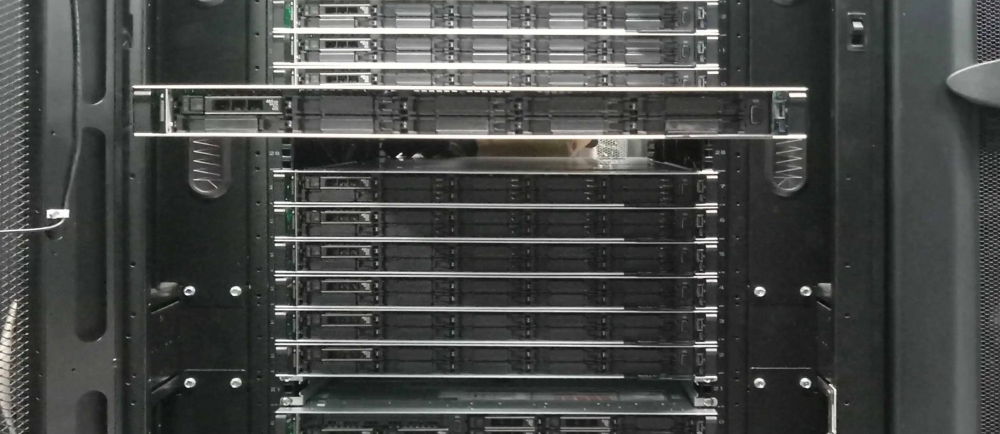
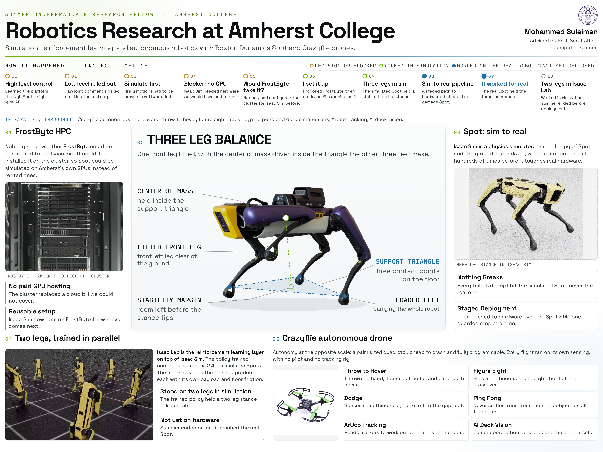

Why lifting one foot is the hard part
On four feet she balances over the square her feet make. Lift one and it becomes a triangle. If the center of mass is not already inside that triangle when the foot leaves the floor, she tips. So the body has to move first, then the leg.
The Solution
Jacobian inverse kinematics turns a foot target into hip, knee and abduction angles. A stability check runs between every phase, and a failed check resets her to a standing position instead of continuing to move to an unstable state. This code is hand written and does not contain any trained policy.
Simulation First
To avoid risking damage to the real robot, I tested everything in simulation first. Falls could be reset instantly, which let me iterate quickly and safely.
Nothing moved to the real Spot until it ran clean in sim, repeatedly.
Two leg policy
Two leg balance is inherently unstable. The robot has to continuously maintain the pose rather than relying on a fixed stance.
I trained 2400 robots in parallel with randomized payloads, floor friction, and periodic pushes to generalize the policy.
It now holds a stable two leg stance in simulation. Deployment on Daisy is planned for the spring.
Getting Isaac Sim Running on FrostByte
Isaac Sim is NVIDIA's robotics simulator, the virtual environment where I ran Spot before testing on the real robot.
I worked with Amherst IT to get Isaac Sim running on FrostByte, setting up the environment on my end so I could run simulations on the cluster's GPUs.
That setup now lets me train remotely and gives future students a working environment from day one.

FrostByte
Amherst's GPU cluster. Every training above ran here, giving me the compute I needed without relying on paid cloud GPUs.

The poster
Created for Amherst's summer research program, summarizing my work on Daisy, reinforcement learning, Crazyflie drones, and the challenges I ran into along the way.